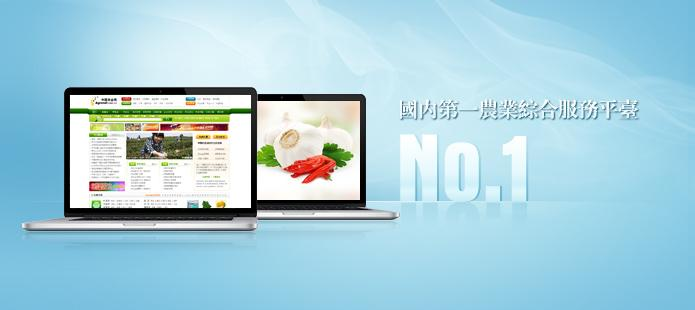

关于我们ABOUT US
首页 > 关于我们

浙江瞬时达网络有限公司（中国农业网）前身是杭州世讯信息技术有限公司，成立于1997年，作为浙江省农村发展集团旗下子公司，是一家集互联网信息、电子商务和线下服务于一体的高科技企业。
公司总部设在杭州，在山东济南设立山东分公司，下设寿光办事处。现有员工近120余人，其中90%以上为本科以上学历。
公司凭借一支十余年从事互联网行业的专业化队伍和独特的经营理念，在网络经济的浪潮中脱颖而出，成功创造开发了国内知名农业站点——中国农业网。网站以“综合涵盖+行业细分”的双重模式整合农业行业资源，引领农业信息化潮流，在国内农业电子商务领域独树一帜。中国农业网日访问量250,000余人次，最高日访问量已达300,000人次。浙江瞬时达网络有限公司的成长受到了政府和社会各界的高度关注与支持。全国各家资讯单位，如新华社、人民日报、中国青年报、南方周末、经济参考报、浙江日报，以及新浪、搜狐等媒体广泛关注报道。
今在浙江省农村发展集团内外资源的强力支持下，公司将集中全力专注于信息服务、电子商务和物流配送等全产业链各个领域的整合服务，实现 “互联网信息服务”与“电子商务服务”相结合、“线上服务”与“线下服务”相结合的发展格局，打造“涵盖综合+专业精准”的“大农网”，不断促进和引领农业信息化。